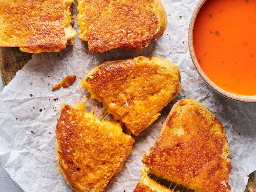

Grilled Cheese

Description
This recipe has been passed down for generations in our family.
It is said to have been first introduced to the world via my great-great-great-great-great-great-grandmother.
Ingredients
Steps
- Add Butter to a hot pan
- Put cheese between 2 buns and place that on the pan
- Flip when bottom slice of bread is a golden brown
- Remove when cheese is melted and both buns are golden brown